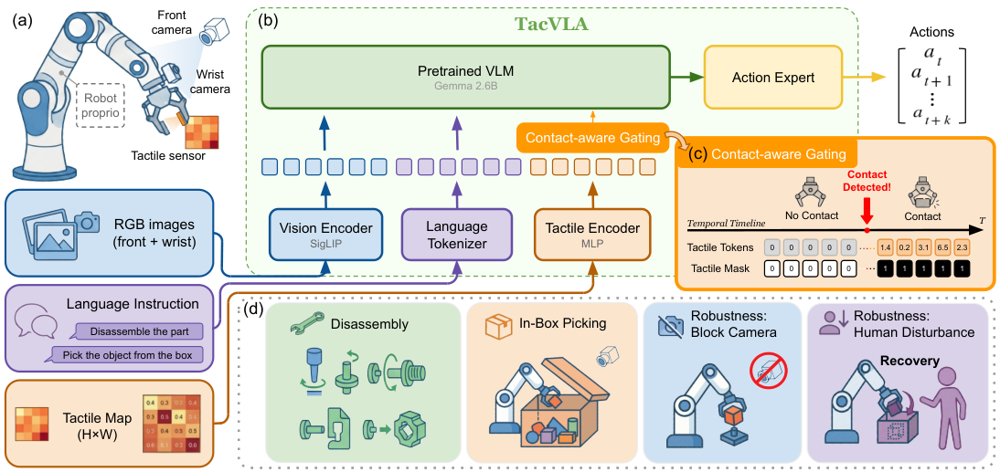

论文笔记：TacVLA——触觉应该在什么时候参与动作决策？
论文笔记：TacVLA——触觉应该在什么时候参与动作决策？
最值得记住的是：触觉的价值取决于接触状态，直接增加一种模态不保证更好。 TacVLA 把低维压力阵列接入 π0.5，再用一个二值接触规则控制触觉 token 是否参与融合。真正有说服力的是同骨干的门控消融，而不只是它胜过从头训练的 Diffusion Policy。
读完应留下四件事：接触前屏蔽触觉、接触后联合融合；触觉输入与门控各有收益；遮挡实验仍保留腕部相机；所有任务各自微调，尚未证明统一策略的跨任务泛化。
1. 背景与材料范围
- 论文：TacVLA: Contact-Aware Tactile Fusion for Robust Vision-Language-Action Manipulation，Purdue University、IIT 与 University of Genoa 团队，Kaidi Zhang、Heng Zhang 等。
- 版本：初稿 2026-03-13；本文依据 arXiv v4 全文，修订于 2026-09-06。已阅读正文、三张表及讨论，并检查架构图和遮挡结果图；未运行代码或复现实验。
- 发表状态：作者 Zhengtong Xu 的主页列为 IROS 2026；项目页仍标 Under Review，两者更新不同步。实验事实以 v4 为准。
2. 关键问题：机器人闭合了夹爪，怎样知道真的抓住了？
Golden Case：论文的箱内抓取。 前置相机看不到箱内，腕部相机又受光照和遮挡限制。任务要求机器人在箱内探索，接触物体后抓取，再放到碗里。作者观察到，纯视觉 π0.5 经常没有抓住物体就执行抬升（§IV-B2）。视觉上完成了“伸入—闭合—抬起”的动作序列，不代表物理上建立了有效接触。
加触觉似乎很自然，但接触前的传感器读数可能主要是噪声和漂移。把这类 token 始终放进注意力，会让策略在视觉定位阶段也处理不可靠的触觉表示。本文解决的具体问题是：既利用接触后的压力分布，又避免接触前无条件融合触觉。 对“无条件融合产生干扰”的解释，作者提供了消融和失败案例，但没有直接测量注意力竞争（§III-B、§IV-D）。
3. 关键方法：固定 token 结构，用接触事件打开触觉通道
沿箱内抓取走一遍流程：
- 输入：前置/腕部 RGB、任务指令、机器人本体状态，以及一个手指上的 $15\times8$ 触觉阵列。它提供 120 个法向接触力测量值，不能直接等同于完整三维力或高分辨率接触几何。
- 接触前：视觉经 SigLIP 编码；语言与本体状态按论文描述经 PaliGemma tokenizer 处理。触觉先由 MLP 编成 36 个 token，加固定二维正余弦位置编码，但随后被置零并从注意力中屏蔽。
- 接触发生：超出压力阈值的 taxel（触觉单元）数量超过指定计数，接触标志变为 1。触觉 token 开始与视觉、语言 token 共同参与 prefix 内的非因果注意力。
- 输出动作：融合表示作为 π0.5 风格 action expert 的条件，通过 flow matching 训练的动作模块预测连续动作序列。作者观察到策略会在箱中探索、重抓，再抬升和放置（§III-A/B、§IV-B2）。
这里的第 4 步是学到的策略行为：论文没有说门控模块直接写死了“没有接触就禁止抬升”的动作规则，也不能把“检测到接触”自动等同于“已经稳定抓住目标”。

原文 Fig. 1，来源：v4 架构图。重点看右侧 (c)：接触前同时关闭 token 表示和 mask，接触后同时开启；左侧 (b) 则说明触觉进入预训练 VLM 的共同前缀，而非只在动作输出后补一个控制器。图中 VLM 标为 Gemma 2.6B，不应把它当成整个策略的总参数量。

为什么要同时置零和屏蔽？
论文的核心公式是：
$M_t^{tac}$ 是完整注意力 mask 中涉及触觉的子矩阵；$c_t=0$ 表示无接触，$c_t=1$ 表示有接触。前者控制信息能否流入跨模态注意力，后者抑制 embedding 偏置、位置编码以及接触前噪声的影响。仅将输入读数设为零，不等于后续编码表示为零；仅保留零向量，也不等于在注意力归一化中删除该位置。这是双重处理的直觉，但论文没有分别消融两项贡献。
接触规则可按文字描述写成下面的等价示意，这是笔记者形式化，不是原文额外公式：
$p_{t,i}$ 是第 $i$ 个 taxel 的读数，$\tau$ 是压力阈值，$K$ 是计数阈值。二者决定轻微接触会被过滤还是被接受，正文未给具体取值 [?]。门控规则本身不训练；MLP 触觉编码器与 LoRA 适配参数共同优化。固定位置编码也不训练。
它保留固定 token 数量，而非动态删除 token。 因而“抑制无效信息”有直接结构依据；“部署更快”还需要测延迟或 FLOPs，不能从 mask 自动推出。相较静态拼接，最小新增机制就是物理接触条件下的信息路由，而不是新的动作生成目标。
4. 数据与训练：五个小规模、任务专用的真机策略
平台为 Franka Emika Panda 7 自由度机械臂、平行夹爪、双 RGB 相机和单指触觉阵列（§IV-A）。四种拆卸任务分别是紧轴拔出、按夹后拔出、旋转 90° 后拔出、向内滑动后拔出；第五项为箱内抓取，均以放入碗中结束（Table I）。
每个任务采集 50 条遥操作示范，合计 250 条；视觉、触觉、本体状态和动作以 10 Hz 同步。每个任务独立微调一个模型，不是把五类数据训练成同一个多任务策略。TacVLA 在 OpenPI pi05_base 上做 LoRA 微调，训练 10,000 gradient steps，并联合训练触觉编码器（§III-C）。记录频率不等于已测得的部署控制频率。
箱内指令明确包含先探索直到接触、再抓取放置的顺序（Table I）。因此这一实验不能单独证明模型从任意开放指令中自主发现了探索策略；语言条件是否真正被使用，也缺少改写/移除指令对照。
复现前还需要补齐：MLP 具体结构及 120 个值到 36 个 token 的映射、LoRA rank/注入位置、学习率与 batch size、action horizon、接触阈值和评估初始化分布 [?]。另有一处设置需澄清：§III-C 说微调 10,000 steps，§IV-A3 在 diffusion baseline 段落又写 all policies 训练 200 epochs；两种口径怎样对应没有说明，不能直接宣称所有方法训练预算严格相同。
5. 关键结果：先看触觉增益，再看门控额外贡献
同骨干比较比跨架构排名更关键
下表合并 Table II 主实验和 Table III 消融。每个任务、每种方法均测试 20 次；拆卸均值是四项成功率的算术平均。
| 方法 | 紧轴 | 按夹 | 旋转 | 滑拉 | 拆卸均值 | 箱内抓取 |
|---|---|---|---|---|---|---|
| 微调 π0.5，无触觉 | 16/20 | 16/20 | 13/20 | 6/20 | 63.75% | 2/20（10%） |
| π0.5 + 触觉，无门控 | 18/20 | 16/20 | 12/20 | 11/20 | 71.25% | 8/20（40%） |
| TacVLA，触觉 + 门控 | 20/20 | 18/20 | 14/20 | 15/20 | 83.75% | 14/20（70%） |
这张表支持两个不同结论：
- 整个触觉方案对比纯视觉：拆卸提升 20 个百分点，箱内抓取提升 60 个百分点。摘要写 20%/60%，这里应按绝对成功率差理解。
- 门控的增量收益：对比已经有触觉的策略，拆卸再提升 12.5 个百分点，箱内抓取再提升 30 个百分点。后者才是门控必要性的主要证据。
细看任务分布，整个方案最大拆卸增益在滑拉：30%→75%；旋转任务只有 65%→70%。无门控在旋转任务甚至略低于无触觉（60% vs 65%），但这只相差 1 次成功，没有多种子或置信区间，不能当成稳定退化的强证据。Fig. 7 的错位、重复重抓、停滞等案例支持作者的干扰解释，但仍是定性佐证。
Table II 中，带触觉的 Diffusion Policy、3D Diffusion Policy 拆卸均值分别为 48.75%、31.25%，箱取为 0%、5%。它们说明“有同一种传感器”并不足以获得 TacVLA 的结果；由于预训练、架构和训练方式同时变化，不能把这组差距全部归给门控（作者也在 §IV-B3 讨论了预训练优势）。
视觉被遮挡后，还剩下多少成功率？
§IV-C1 的干预是挡住前置相机，并非关闭所有视觉。Fig. 6 与正文报告：
| 方法 | 紧轴 | 按夹 | 旋转 | 滑拉 | 四项均值（据原文计算） |
|---|---|---|---|---|---|
| 微调 π0.5 | 40% | 40% | 5% | 35% | 30% |
| TacVLA | 70% | 65% | 45% | 70% | 62.5% |
因此摘要的 2.1 倍来自 $62.5/30\approx2.08$；绝对提升为 32.5 个百分点。这支持触觉方案对前置视觉受损的补偿作用，不能写成纯触觉盲操作。滑拉任务的视觉 baseline 在这里反而比无遮挡的 30% 高 5 个百分点，也提醒我们小样本结果不能逐项解释成稳定规律。

来源：原文 Figure 6。比较纯视觉、无门控触觉、接触门控三组，才能区分增加触觉和增加门控的收益；这组遮挡实验不能替代运行时扰动的恢复率评测。
人为扰动展示了恢复行为，但没有恢复率
在箱内任务中，机器人抓住并开始抬起物体后，人将物体放回箱内。作者展示 TacVLA 返回、重新定位和抓取，而 π0.5 无法恢复（§IV-C2、Fig. 5）。这是一个有意义的闭环案例，但没有重复次数、恢复成功率或扰动强度分布；只能作为定性证据，不能与主实验成功率并列成统计鲁棒性结论。
6. Insights：下一轮最值得做的三个对照
1. 门控的收益可能部分来自“阶段提示”，不只是去噪。 接触标志直接决定模型能看到什么，同时与探索→抓取→搬运阶段高度相关。现有无门控对照同时移除了这种阶段结构和噪声过滤，因此没有分清两者。我会增加“只输入 contact bit、不输入压力图”，以及“保留压力图并额外输入 contact bit、但不做 mask”的对照：若前者接近 TacVLA，复杂触觉几何未必是主要信息来源；若后者已足够，硬屏蔽可能并非必要。
2. 二值门控最危险的地方是弱接触边界。 §V 已承认硬阈值不能渐进调权；结合公式可推出，阈值附近的轻触可能被误判成无接触，刚好删掉首次接触或滑脱前的弱信号。建议固定策略，在压力缩放、零点漂移和短暂接触下扫阈值，并测门控开关抖动；再比较滞回阈值或软门控。这是在检验真实的传感器迁移成本，而非仅重复五项任务成功率。
3. 最应补的是统一多任务训练，而不是再加一个成功视频。 当前每任务 50 条示范、单独微调，门控可能只需服务于固定操作阶段。把五任务联合训练，再测试未见几何约束或同一场景下的不同指令，才更接近 VLA 的语义泛化问题。现有结果足以支持它作为接触密集、小数据适配的模块候选，不足以证明通用触觉 VLA 已成立。
7. 连接与发现
- MOC-VLA — Topic/Area：为 VLA 的模态失衡问题提供一个基于物理接触事件的显式路由方案；阅读时区分传感器增益、路由增益与泛化证据。